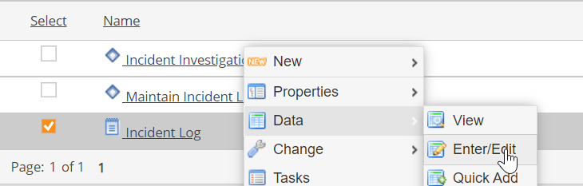
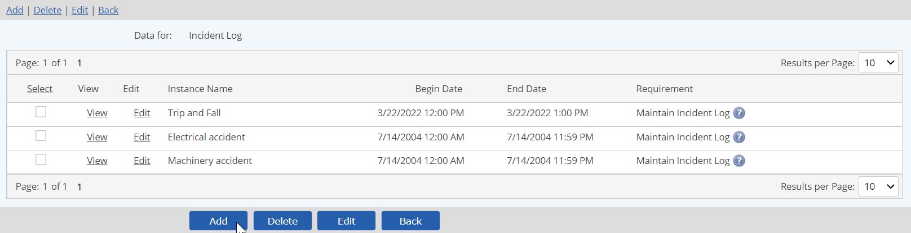
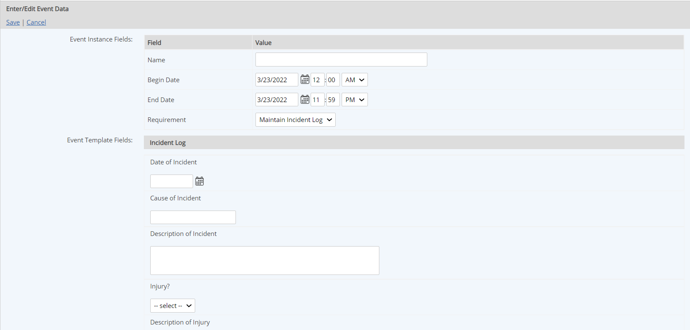
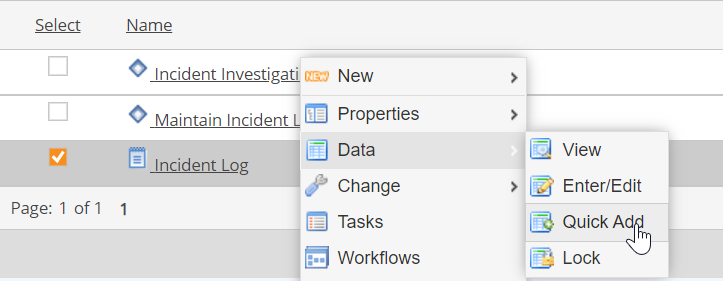

Event log records for a manual Event Log can be created as needed.
If an event is related to multiple requirements, such as when logging findings and assessments, you can create multiple events at once with Quick Add. See Multiple Log Entries with Quick Add.
To create a single event instance for an event log:
Select the event log in the Requirements view. Right click and select Data > Enter/Edit.

The event log records are displayed.
Select Add.

The event data form appears.
Complete the required Event Fields on the form:
Name: Enter a name for the event.
Note that if a task is associated with the event, the instance name will be appended to the task name.
Begin Date: Begin date for the event.
End Date: End date for event, or date incident was closed.
Requirement: If more than one requirement is associated with the event, select the relevant requirement for this instance. You must create a separate instance for each requirement.
Complete the other fields to document the event, as applicable.
If the rest of the information will be supplied by another user who is assigned a followup task, you can simply save the record and quit.

If a task template is associated with the Event, the task will be automatically triggered when the record is saved. Further data for the event can then be supplied by the task assignee from the task completion form.
If no task is associated with the instance, you can edit the record later to supply more information if necessary.
Both the Assignee and the Assignor of an event-triggered task are specified on the properties of the event log and are the same for all events. The task assignee can be changed only by editing the event log properties (if you have the appropriate rights).
Quick Add for Event Logs lets you create event log entries for multiple requirements. You can select the requirements that apply, then supply the information for all instances at once.
When entering data for assessments and findings, the Quick Add feature should be used exclusively, in order to group findings into a single assessment and enable proper reporting. See Logging Findings & Assessments.
To create multiple log entries with Quick Add:
Select the event log in the Requirements view. Right click and select Data > Quick Add.

The requirements monitored by the Event Log are shown.
Select all the requirements for which you want to create events.
Click Next.
An event form is displayed.
Select all those requirements that pertain to this incident (de-select those that do not).
One event will be created for each requirement you select.
Complete the rest of the fields to document the event.
The same field information will be applied to all the events.